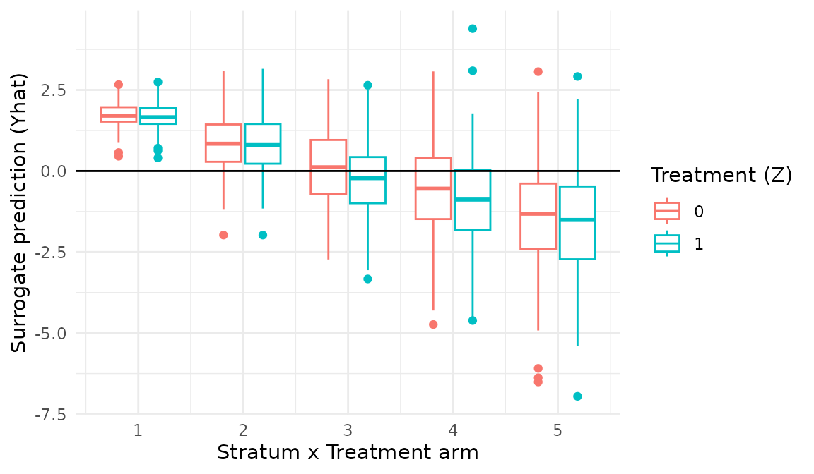
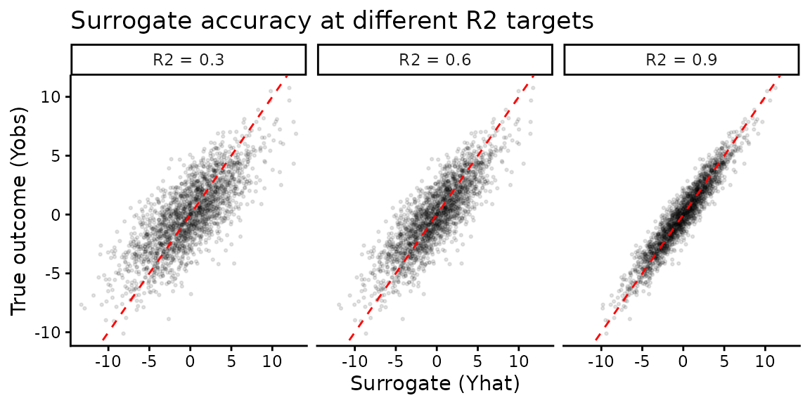
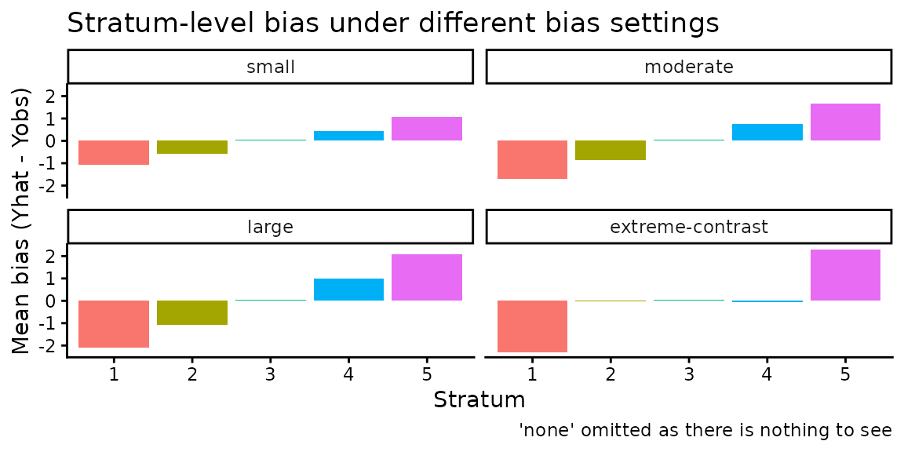
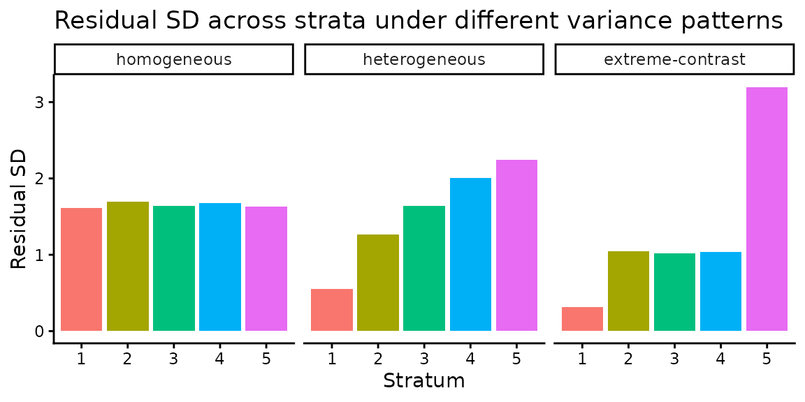
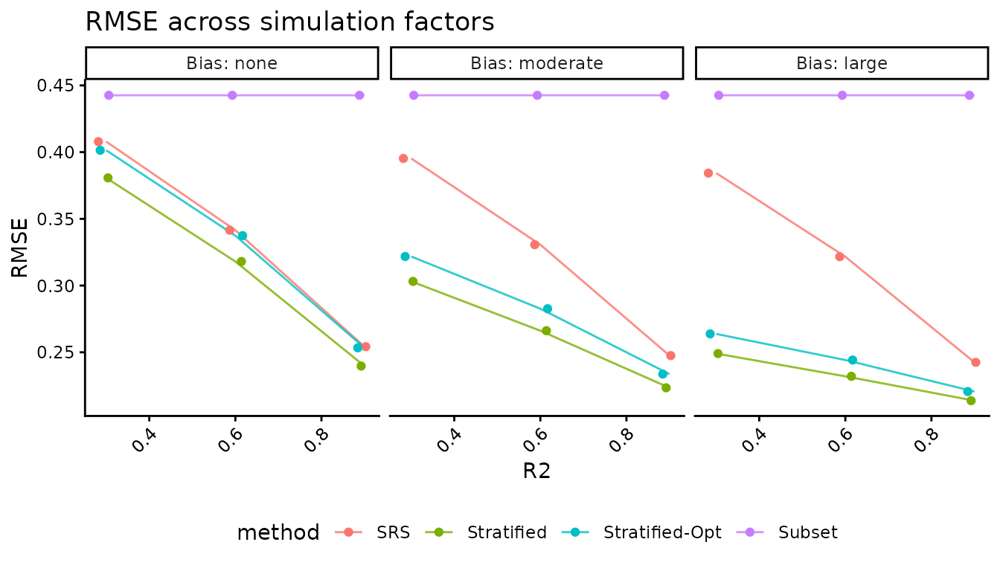

The stratsampling package includes a data-generating
process (DGP) for comparing stratified and simple random sampling
designs. The examples below show how to generate simulated populations,
vary the structure of surrogate prediction error, and run Monte Carlo
experiments.
The generate_population() function creates a randomized
experiment with
units, potential outcomes, treatment assignment, observed outcomes, and
surrogate predictions. The surrogate predictions are constructed by
adding stratum-specific bias and noise to the true outcomes. This mimics
the setting where an LLM or other automated system produces an outcome
measure that is correlated with, but not identical to, the human-coded
outcome.
set.seed( 42 )
dat <- generate_population(N = 2000,
n_strat = 5,
tau = 0.5,
bias = "moderate",
residual_var = "heterogeneous",
R2_target = 0.7,
strata_config = "balanced-approx",
seed = 42)
head( dat )
#> Z strata ID Y0 Y1 Yobs Yhat
#> 1 0 1 1 1.0893852 1.5893852 1.0893852 -0.6798572
#> 2 0 1 2 -0.3183735 0.1816265 -0.3183735 -2.5717000
#> 3 0 1 3 4.5345660 5.0345660 4.5345660 2.8936602
#> 4 0 1 4 3.9146090 4.4146090 3.9146090 2.2167931
#> 5 0 1 5 6.8599362 7.3599362 6.8599362 4.9943608
#> 6 0 1 6 -0.8363663 -0.3363663 -0.8363663 -2.3592195The returned data frame contains:
Z: Treatment indicator (0/1).strata: Stratum assignment (integer 1 to
n_strat).Y0, Y1: Potential outcomes under control
and treatment.Yobs: The realized outcome under the assigned
treatment.Yhat: Surrogate prediction (Yobs + stratum-specific
noise).ID: Unique unit identifier.A boxplot of the errors by stratum and treatment arm gives an
immediate visual summary of how the surrogate may be systematically off.
particular, you can see how the distribution of Y - Yhat
varies across strata for both treatment arms.
ggplot( dat, aes( x = strata,
y = Yobs - Yhat, color = factor(Z),
group = interaction(Z,strata) ) ) +
geom_boxplot() +
labs( x = "Stratum x Treatment arm", y = "Surrogate prediction (Yhat)",
color = "Treatment (Z)" ) +
theme( axis.text.x = element_text( angle = 45, hjust = 1 ) ) +
geom_hline( yintercept = 0 ) +
theme_minimal()
For this particular DGP, we see systematic bias in some of the strata, and more variation in the size of error across strata.
The DGP is controlled by several parameters that govern the structure of the surrogate predictions. We walk through some of the core ones in the following.
R2_target)
The R2_target parameter controls the overall predictive
accuracy of the surrogate. Higher values mean the surrogate is a better
predictor of the true outcome. The package calibrates the noise so that
the population R-squared of the surrogate approximately matches the
target.
scenarios <- tibble(
R2 = c(0.3, 0.6, 0.9),
label = paste0("R2 = ", c(0.3, 0.6, 0.9))
)
dat_r2 <- map_dfr(scenarios$R2, function(r2) {
d <- generate_population(N = 2000, n_strat = 5, tau = 0,
bias = "none",
residual_var = "homogeneous",
R2_target = r2, seed = 42, no_tx = TRUE)
d$R2_label <- paste0("R2 = ", r2)
d
})
ggplot(dat_r2, aes(x = Yhat, y = Yobs)) +
geom_point(alpha = 0.1, size = 0.5) +
facet_wrap(~R2_label) +
geom_abline(slope = 1, intercept = 0, color = "red", linetype = 2) +
labs(title = "Surrogate accuracy at different R2 targets",
x = "Surrogate (Yhat)", y = "True outcome (Yobs)")
bias)
The bias parameter controls whether the surrogate over-
or under-predicts the true outcome differently across strata. Available
options are:
"none": No systematic bias in any stratum."small": Bias up to 25% of the outcome standard
deviation."moderate": Bias up to 50% of the outcome SD."large": Bias up to 100% of the outcome SD."extreme-contrast": Bias concentrated in only two
strata.Bias is always mean-centered across strata (weighted by stratum size), so the overall surrogate mean equals the overall true mean on average.
bias_scenarios <- c("small", "moderate", "large",
"extreme-contrast")
dat_bias <- map_dfr(bias_scenarios, function(b) {
d <- generate_population(N = 3000, n_strat = 5, tau = 0,
bias = b,
residual_var = "homogeneous",
R2_target = 0.7, seed = 42, no_tx = TRUE)
d$bias_level <- b
d
})
dat_bias %>%
group_by(bias_level, strata) %>%
summarise(bias = mean(Yhat - Yobs), .groups = "drop") %>%
mutate(bias_level = factor(bias_level, levels = bias_scenarios)) %>%
ggplot(aes(x = factor(strata), y = bias, fill = factor(strata))) +
geom_col() +
facet_wrap(~bias_level) +
labs(title = "Stratum-level bias under different bias settings",
x = "Stratum", y = "Mean bias (Yhat - Yobs)",
caption ="'none' omitted as there is nothing to see") +
theme(legend.position = "none")
residual_var)
The residual_var parameter controls whether prediction
errors (not including bias) are equally variable across strata or
concentrated in certain strata:
"homogeneous": Equal residual variance in all
strata."heterogeneous": Linearly increasing variance across
strata."extreme-contrast": One stratum with very high variance
and one with very low variance (requires at least 3 strata).
var_scenarios <- c("homogeneous", "heterogeneous", "extreme-contrast")
dat_var <- map_dfr(var_scenarios, function(v) {
d <- generate_population(N = 3000, n_strat = 5, tau = 0,
bias = "none",
residual_var = v,
R2_target = 0.7, seed = 42, no_tx = TRUE)
d$var_pattern <- v
d
})
dat_var %>%
group_by(var_pattern, strata) %>%
summarise(resid_sd = sd(Yhat - Yobs), .groups = "drop") %>%
mutate(var_pattern = factor(var_pattern, levels = var_scenarios)) %>%
ggplot(aes(x = factor(strata), y = resid_sd, fill = factor(strata))) +
geom_col() +
facet_wrap(~var_pattern) +
labs(title = "Residual SD across strata under different variance patterns",
x = "Stratum", y = "Residual SD") +
theme(legend.position = "none")
The describe_population() function summarizes a
generated dataset. It gives two tables, one of strata-level
characteristics and one of overall population characteristics.
describe_population(n_strat = 5,
bias = "moderate",
residual_var = "heterogeneous",
R2_target = 0.7,
verbose = TRUE)
#>
#>
#> | Z| strata| b| sd_e| n| w|
#> |--:|------:|-----:|----:|-----:|---:|
#> | 0| 1| -1.69| 0.39| 10000| 0.2|
#> | 0| 2| -0.86| 0.84| 10000| 0.2|
#> | 0| 3| -0.02| 1.12| 10000| 0.2|
#> | 0| 4| 0.84| 1.35| 10000| 0.2|
#> | 0| 5| 1.71| 1.54| 10000| 0.2|
#> | 1| 1| -1.68| 0.38| 10000| 0.2|
#> | 1| 2| -0.85| 0.85| 10000| 0.2|
#> | 1| 3| 0.01| 1.13| 10000| 0.2|
#> | 1| 4| 0.83| 1.37| 10000| 0.2|
#> | 1| 5| 1.69| 1.53| 10000| 0.2|
#>
#>
#> | Z| Var_b| E_sig2| prop_bias| R2|
#> |---:|-----:|------:|---------:|-----:|
#> | 0.5| 1.43| 1.265| 0.531| 0.702|This method is useful for verifying that the DGP produces the intended properties before running a large simulation.
A simulation study draws many populations (or samples from a fixed population) and compares estimator performance. Here we demonstrate a simple simulation comparing four estimators:
# Generate a single population
pop <- generate_population(N = 2000, n_strat = 5, tau = 0.5,
bias = "moderate",
residual_var = "heterogeneous",
R2_target = 0.7,
strata_config = "balanced-approx",
seed = 1234)
# One iteration function
one_iter <- function(pop, n_code) {
N <- nrow(pop)
# --- Subset estimator (SRS, no surrogate) ---
samp_srs <- pop %>% group_by(Z) %>% sample_n(n_code / 2)
pop_sub <- pop %>% mutate(S = ifelse(ID %in% samp_srs$ID, 1, 0))
out_subset <- est_subset(pop_sub, S = pop_sub$S)
# --- SRS model-assisted ---
out_srs <- est_ma_srs(pop_sub, Yhat = pop_sub$Yhat, S = pop_sub$S)
# --- Proportional stratified ---
pop$S <- generate_sample_index(pop, n_code, Z = "Z", strata = "strata")
out_strat <- est_ma_strat(pop, Yhat = "Yhat", S = "S",
Z = "Z", strata = "strata")
# --- Optimal stratified ---
pop_opt <- calc_optimal_allocation_oracle(pop, n_code,
strata = "strata", Z = "Z")
out_opt <- est_ma_strat(pop_opt, Yhat = "Yhat", S = "S",
Z = "Z", strata = "strata")
bind_rows( Subset = out_subset,
SRS = out_srs,
Stratified = out_strat,
`Stratified-Opt` = out_opt, .id = "method" )
}Now run 200 iterations and summarize:
set.seed(999)
n_code <- 200
results <- map_dfr(1:200, function(i) {
out <- one_iter(pop, n_code)
out$iter <- i
out
})Then summarize the results:
sim_summary <- results %>%
group_by(method) %>%
summarise(
mean_est = mean(est),
bias = mean(est) - 0.5,
empirical_SE = sd(est),
mean_SEhat = mean(SEhat),
RMSE = sqrt(mean((est - 0.5)^2)),
.groups = "drop"
) %>%
arrange(RMSE)
sim_summary
#> # A tibble: 4 × 6
#> method mean_est bias empirical_SE mean_SEhat RMSE
#> <chr> <dbl> <dbl> <dbl> <dbl> <dbl>
#> 1 Stratified-Opt 0.430 -0.0705 0.130 0.190 0.148
#> 2 Stratified 0.439 -0.0609 0.147 0.198 0.158
#> 3 SRS 0.440 -0.0602 0.207 0.253 0.215
#> 4 Subset 0.395 -0.105 0.406 0.419 0.418To understand how different factors affect estimator performance,
loop over a grid of DGP settings. Here we vary R2_target
and bias:
grid <- expand_grid(
R2 = c(0.3, 0.6, 0.9),
bias = c("none", "moderate", "large")
)
grid_results <- map_dfr(1:nrow(grid), function(g) {
pop_g <- generate_population(N = 2000, n_strat = 5, tau = 0.5,
bias = grid$bias[g],
residual_var = "heterogeneous",
R2_target = grid$R2[g],
strata_config = "balanced-approx",
seed = 42)
map_dfr(1:100, function(i) {
out <- one_iter(pop_g, n_code = 200)
out$R2 <- grid$R2[g]
out$bias_level <- grid$bias[g]
out$iter <- i
out
})
})Results in hand, summarize by factor combination
factor_summary <- grid_results %>%
group_by(R2, bias_level, method) %>%
summarise(RMSE = sqrt(mean((est - 0.5)^2)),
.groups = "drop")Then simply plot the results:
factor_summary %>%
mutate(bias_level = factor(bias_level,
levels = c("none", "moderate", "large"))) %>%
ggplot(aes(x = R2, y = RMSE, color = method)) +
geom_line(alpha = 0.8) +
geom_jitter( width = 0.02, height = 0 ) +
facet_wrap( ~ bias_level,
labeller = labeller(R2 = function(x) paste0("R2 = ", x),
bias_level = function(x) paste0("Bias: ", x))) +
labs(title = "RMSE across simulation factors",
x = "R2", y = "RMSE") +
theme(axis.text.x = element_text(angle = 45, hjust = 1),
legend.position = "bottom")